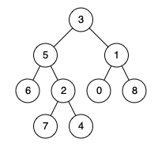

剑指 Offer 68 - II. 二叉树的最近公共祖先
后序递归：碰到 p 或 q 就返回自己；左右子树各找到一个，当前结点就是答案；否则把找到的那一侧原样往上传。
思路
- 函数含义：返回「
root子树里找到的 p 或 q，或它俩的最近公共祖先」，什么都没有返回null。 - 终止：
root为空或就是p、q时返回root。碰到 p 就停：q 要么在 p 下面（此时答案就是 p），要么根本不在这棵子树里。 - 后序：先拿
left、right两个结果。都非空 → p、q 分居两侧，root就是答案。 - 只有一侧非空 → 返回那一侧（p、q 或已找到的祖先），一路传到根就是答案。
图解
最优解
1class Solution {2 public TreeNode lowestCommonAncestor(TreeNode root, TreeNode p, TreeNode q) {3 // 函数含义：这棵子树里找到的 p 或 q（或它俩的最近公共祖先），什么都没有就返回 null4 if (root == null || root == p || root == q) return root;5 TreeNode left = lowestCommonAncestor(root.left, p, q);6 TreeNode right = lowestCommonAncestor(root.right, p, q);7 // 两侧各找到一个：p、q 分居 root 两边，root 就是答案8 if (left != null && right != null) return root;9 // 只有一侧有结果：原样往上传10 return left != null ? left : right;11 }12}题目
给定一个二叉树, 找到该树中两个指定节点的最近公共祖先。
百度百科中最近公共祖先的定义为：“对于有根树 T 的两个结点 p、q，最近公共祖先表示为一个结点 x，满足 x 是 p、q 的祖先且 x 的深度尽可能大（一个节点也可以是它自己的祖先）。”
例如，给定如下二叉树: root = [3,5,1,6,2,0,8,null,null,7,4]

示例 1：
输入：root = [3,5,1,6,2,0,8,null,null,7,4], p = 5, q = 1 输出：3 解释：节点5和节点1的最近公共祖先是节点3。
示例 2：
输入：root = [3,5,1,6,2,0,8,null,null,7,4], p = 5, q = 4 输出：5 解释：节点5和节点4的最近公共祖先是节点5。因为根据定义最近公共祖先节点可以为节点本身。
说明：
- 所有节点的值都是唯一的。
- p、q 为不同节点且均存在于给定的二叉树中。
注意：本题与主站 236 题相同：https://leetcode.cn/problems/lowest-common-ancestor-of-a-binary-tree/
题面取自力扣当前版本。
数据快照 2026-11-04。题面版权归力扣所有，本站点仅供本人学习使用，请勿对外发布。